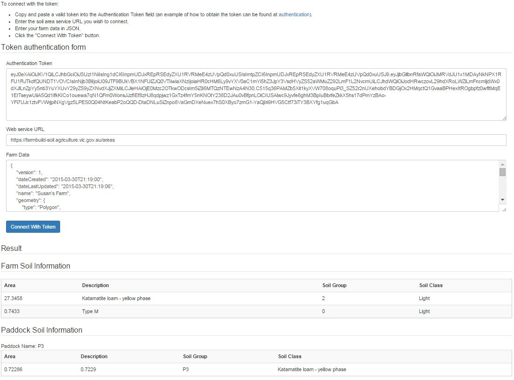

Farm Build Soil Sample Importer
This is the 'Soil Area Service' module of farmbuild javaScript library. GITHUB Repo
The 'Soil Area Service' has been designed as a Stand alone sample and as a web service that can be integrated into new or existing platforms.
The sample include the ability to...
- Authenticate with OAuth to generate client secrets and client token.
- Load a farmdatablock.json file (Can be generated from the Farmbuild Web Mapping module sample)
- Return Farm Boundry Area Intersection of GMID soil types(Soils & Rural Parcel WFS).
- Return Farm Paddocks Area Intersection of GMID soil types

The Soil Area Service has been designed to write the soil description, and farm paddock data into a specified JSON structure called the 'Farm Data Block'.
Through the JSON structure, the JSON exports are interoperable with the other farmbuild modules.Â